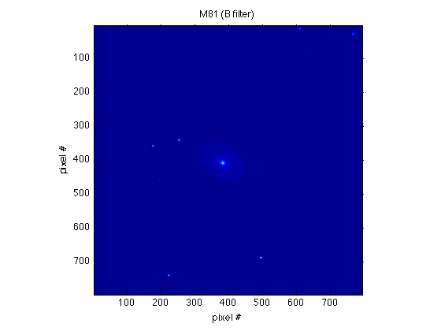
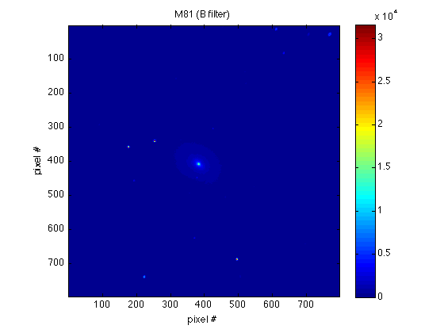
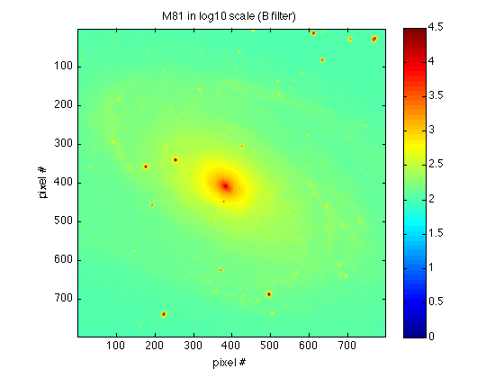
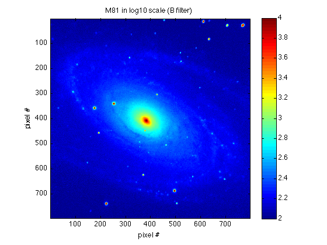

Visualizing FITS data
Make sure that you have the rfits.m function file in your current directory!
Contents
Reading FITS file
The syntax for rfits is similar to load, which you should now be familiar with:
colorB = rfits('MESSIER_081-I-B-pasp1997-b3x120s.fits');
To see what type of variable colorB is, we can use whos:
whos
Name Size Bytes Class Attributes colorB 1x1 25418004 struct
Or, type colorB to see all its structure fields:
colorB
colorB =
naxis: 2
bitpix: 16
numpt: [797 797]
crval: [2x1 double]
crpix: [2x1 double]
cdelt: [2x1 double]
crota: [2x1 double]
ctype: {2x1 cell}
cunit: {2x1 cell}
bscale: 1
bzero: 0
bunit: 'ADU'
blank: NaN
extend: ''
datatype: 'INTEGER*2'
object: 'M81 B 3x120s median combined'
irafname: 'M81Bmed120sx3tbsky.imh'
image: 'M81'
iraf_max: 31653
iraf_min: 0
iraf_bpx: 16
iraftype: 'SHORT'
observat: 'Mt Laguna, SDSU'
observer: 'Cheng et al.'
exptime: 120
darktime: -999
imagetyp: '_'
date_obs: '20/02/91'
ut: ' 8:56:00.00'
zd: '_'
airmass: 1.2700
filter: 'B'
telescop: 'MOUNT LAGUNA 40 INCH'
detector: 'TI-800 CCD CHIP # 1'
gain: 1.7000
rdnoise: 12
ccdsec: '_'
origsec: '_'
ccdsum: '_'
instrume: '_'
trim: '_'
overscan: '_'
zerocor: '_'
flatcor: '_'
ccdproc: '_'
ncombine: 3
equinox: 2000
cd1_1: -2.7279e-04
cd2_1: 7.6069e-06
cd1_2: 6.6716e-06
cd2_2: 2.7283e-04
ra: ' 09 55 35.1'
dec: ' +69 04 10.6'
pixelsiz: 0.9820
dscale: 1
dzero: 0
origin: 'KPNO-IRAF'
seeing: 2
photomet: 'Y'
weather: '_'
comments: '_'
a_nmatch: 12
ax_resid: 0.3300
ay_resid: 0.3400
history: {'BDR-TYPE ASTROMETRY ADOPTED'}
x: {[797x797 double] [797x797 double]}
wcs1: [797x797 double]
wcs2: [797x797 double]
data: [797x797 double]
Plotting FITS file
Note that, though there are a lot of fields in colorB, the image data is only stored in the field data. Therefore we want to extract the image data from the imported data structure:
M81B = colorB.data;
Then we can use imagesc to visualize it (with proper title and axis labels):
imagesc(M81B) axis square title('M81 (B filter)'); xlabel('pixel #'); ylabel('pixel #');
Don't forget to use axis square to make the pixels square!
You can also call colorbar to add the color code info:
colorbar;
Note that, some images may have bad pixels that gives negative values. To remove these data points, try
M81B(M81B < 0) = 0;
This will replace every pixel with negative value by zero. Even though not all images have bad pixels, you should better do this step before you adopt the log-scale plot (because you can't take log on negative values!).
Optimizing the plot
As you can read from the colorbar, there is a large range of values in this image and thus some dimmer structures may not be resolved. Recall that, in this case, we can plot in log-scale to reveal those structures:
imagesc(log10(M81B)) axis square colorbar title('M81 in log10 scale (B filter)'); xlabel('pixel #'); ylabel('pixel #');
Now we see there are spiral arms!
But the image still doesn't look good enough because of the scaling. Note that, imagesc scales the data automatically, but you, the user, can adjust the scaling boundary values by adding second argument [min max]. The point to specify the boundary values is that sometimes the structure we are interested in is the dimmer part in the image, which can't be resolved because of some bright spots, just like the M81B we have here.
When a set of spicified boundary values is given, every pixel with value higher than the upper boundary will be shown in the same color as the upper boundary, and those with values smaller than the lower boundary will be shown as the lower boundary:
imagesc(log10(M81B), [2 4]) axis square colorbar title('M81 in log10 scale (B filter)'); xlabel('pixel #'); ylabel('pixel #');
As you can see, when we force imagesc to focus on the values between 2 and 4, the dimmer structure is revealed. However, in the mean time, structures with values higher than 4 (e.g. the central part of the galaxy) or lower than 2 (e.g. the outer part of the galaxy) are not resolved. Therefore you must try many different boundary values to find the best values.